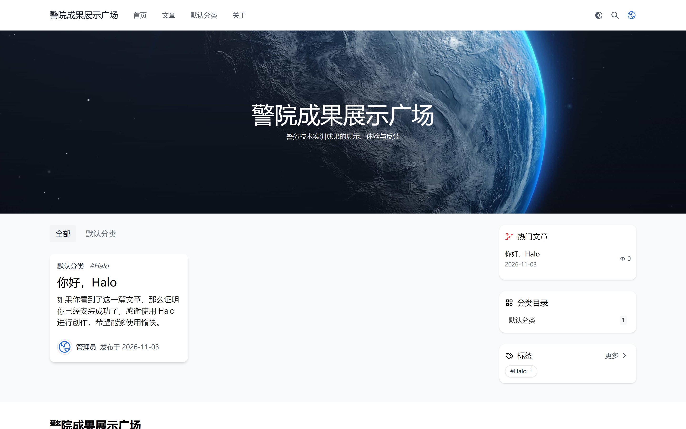
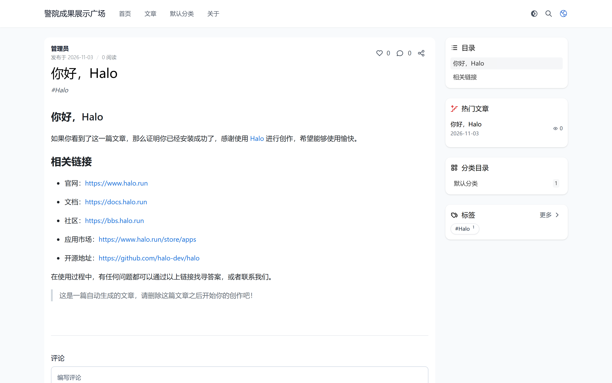
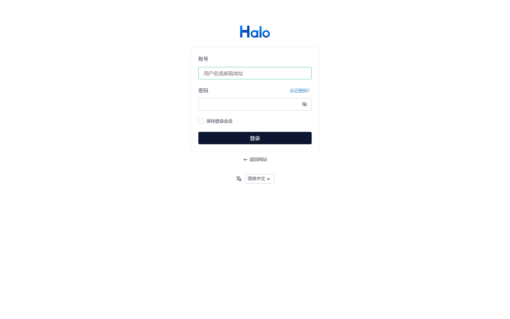
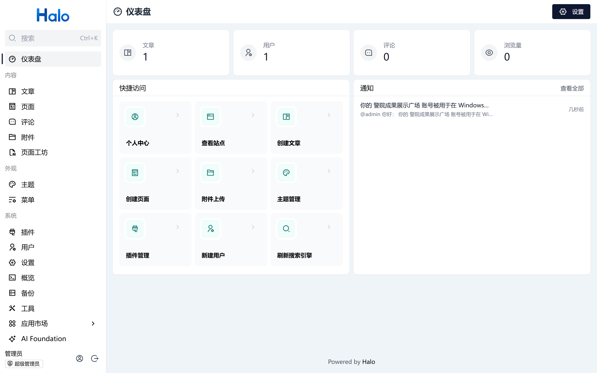
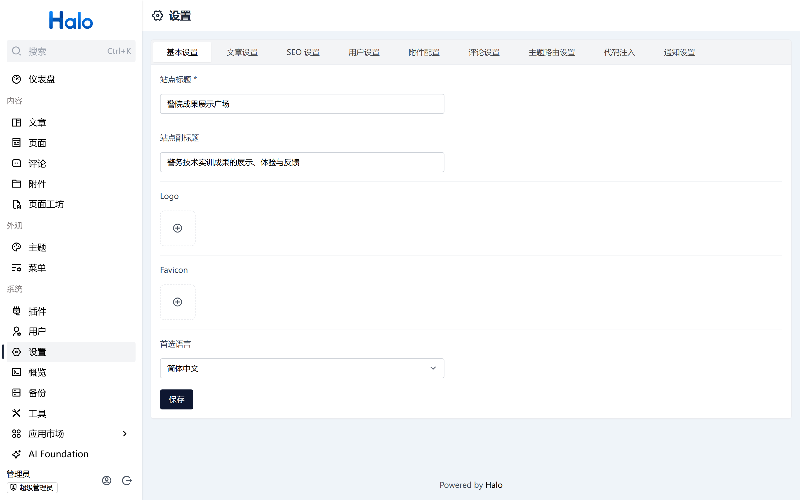

固定版本、固定参数、固定数据目录，从空目录一键重建同一套中文界面；界面语言不随浏览器语言变化。
Halo 自身的中文翻译是完整的：控制台随包提供 zh-CN，默认主题 theme-earth 的 54 条语言键全部有中文译文，页脚版权句在 2.27.2 中已是中文。因此本次工作不是“翻译词条”，而是把默认英文的配置层文案、示例内容和语言策略收敛到中文，并把这套状态固化成可重复执行的脚本。
受限于本机没有 Docker、没有系统级 JDK、WSL 被安全策略禁用，采用“便携运行时 + 官方 fat jar + 内嵌 H2”的纯进程方案，不依赖容器与外部数据库。
| 组件 | 版本 / 形态 | 说明 |
|---|---|---|
| 操作系统 | Windows 10/11 x64 | 进程级隔离，无容器 |
| JDK | Microsoft OpenJDK 21.0.13.0.2+1 LTS | 解压即用，不写注册表、不改 PATH |
| Halo | 2.27.2（halo-2.27.2.jar，129 MB） | SHA-256 aa86f2e9…7348d14，与官方发布一致 |
| 数据库 | 内嵌 H2（文件模式） | 随 jar 自带，位于 workdir/db |
| 监听地址 | 127.0.0.1:8092 | 仅本机可访问 |
# 一条命令：预检 → 启动 → 站点中文化 → 主题中文化 → 重启 → 验收 cd output/plaza-20261103/halo-cn ./bootstrap.sh # 从空目录重建（验证可复现性） ./reset.sh && ./bootstrap.sh
脚本执行五步，任一步失败即中止并打印原因：
| 步骤 | 动作 | 校验 / 说明 |
|---|---|---|
| 1 预检 | 检查 JDK 版本、jar 校验和、端口占用 | JDK 必须为 21；SHA-256 不匹配直接退出 |
| 2 启动 | 固定 JVM 参数启动 jar | 探活 /system/setup，200/302 视为就绪 |
| 3 站点中文化 | 初始化安装 + 站点标识 + 语言 + 管理员名 + 示例文章 | 全部幂等，重复执行只收敛状态 |
| 4 主题中文化 | 扫描主题模板中的硬编码英文并替换 | 2.27.2 默认主题已无英文，脚本作为升级兜底 |
| 5 重启并验收 | 模板有改动才重启，随后跑 8 项断言 | 结果写入 run/verify.json |
| 现象 | 原因 | 处理 |
|---|---|---|
启动报 Port 62406 already in use | 宿主预设 SERVER__PORT，Spring 松散绑定会让环境变量覆盖配置文件 | 启动时 env -u SERVER__PORT 清除，并用 --server.port 命令行参数固定（优先级最高） |
探活失败、curl 127.0.0.1 返回 502 | 宿主设置了 HTTP_PROXY，本机请求被转发到代理 | 导出 NO_PROXY=127.0.0.1,localhost，脚本内 curl 统一 --noproxy '*' |
唯一配置源 config/application.yaml，通过 --spring.config.additional-location 加载，不使用任何隐式默认值：
server:
port: 8092
halo:
external-url: http://127.0.0.1:8092
work-dir: ./workdir
security:
basic-auth:
disabled: false # 仅本地脚本化调用 API；生产必须关闭
spring:
web:
locale: zh_CN
logging:
file:
name: ./run/halo.log
JVM 参数固定：-Xms256m -Xmx1200m -Dfile.encoding=UTF-8 -Dsun.jnu.encoding=UTF-8 -Duser.language=zh -Duser.country=CN -Duser.timezone=Asia/Shanghai
遵循“配置层优先、模板层兜底、源码层不动”的顺序，功能与布局全部保持原样。
| 层次 | 改动前 | 改动后 | 实现方式 |
|---|---|---|---|
| 系统语言 | 随浏览器变化 | 锁定简体中文 | 安装参数 language=zh-CN + systemconfigs/basic.language |
| 站点标题 | Halo SSRF Lab | 警院成果展示广场 | systemconfigs/basic.title |
| 站点副标题 | （空） | 警务技术实训成果的展示、体验与反馈 | systemconfigs/basic.subtitle |
| 管理员显示名 | Administrator | 管理员 | users/admin.spec.displayName（口令字段原样回传） |
| 示例文章 | Hello Halo / 正文小标题 Hello Halo | 你好，Halo | 文章 spec.title + 快照正文改写后重新发布 |
| 页脚版权 | All Rights Reserved. Powered by | 版权所有，保留所有权利。技术支持： | 2.27.2 主题已内置中文；脚本保留替换逻辑用于旧版/其他主题 |
| 英文 | 统一译法 | 说明 |
|---|---|---|
| Post / Posts | 文章 | 不译作“帖子”，与社区帖区分 |
| Page / Pages | 页面 | 单页，与文章区分 |
| Category / Tag | 分类 / 标签 | 分类是树，标签是平行集合 |
| Attachment | 附件 | |
| Theme / Plugin | 主题 / 插件 | |
| Comment / Reply | 评论 / 回复 | 回复是评论的下级 |
| Dashboard / Console | 仪表盘 / 控制台 | Console 特指后台入口 |
| Backup / Migration | 备份 / 迁移 |
保留原文：Halo、GitHub、Markdown、RSS、API、URL、QQ、WeChat，以及语言切换器中的 English / Español / 繁體中文（按母语显示是刻意设计）。
8 项自动化断言，全部基于运行中的实例实时读取，不是静态截图。
en-US 且 Accept-Language: en-US 的浏览器上下文访问，前台、控制台登录页、仪表盘、设置页均为中文。以下截图均在英文浏览器上下文中取得，可证明界面语言由服务端配置决定，而非浏览器语言。





| 事项 | 说明 |
|---|---|
| 控制台前端 | 打包在 jar 内（console/ 静态资源），外部无法逐字修改；实测 2.27.2 已在 en-US 下降级为中文，无需干预 |
| 品牌与技术专名 | Halo、Powered by Halo 属品牌署名，按要求保留 |
| 主题升级 | 主题模板补丁会在主题升级时被覆盖；升级后重跑 scripts/patch_theme.py 即可 |
| Basic 认证 | 为脚本化调用 API 而开启，生产环境应关闭并改用会话鉴权 |
| 数据留存 | 演示实例数据在 workdir/，reset.sh 可随时清空重建 |